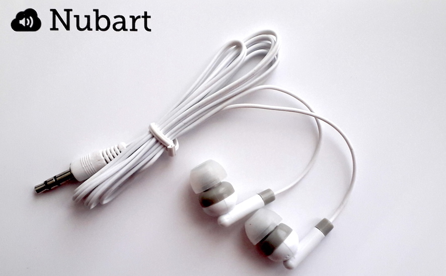

An Nubart häufig gestellte Fragen (FAQ)
Allgemein
Die individuellen Codes, die den Karten gedruckt sind, agieren wie ein Schlüssel, der einen exklusiven Zugang zum digitalen Inhalt ermöglicht. Der Besucher kann den QR-Code scannen, um direkt an den Inhalt zu gelangen, oder, wenn er mit QR-Codes nicht vertraut ist, einen alphanumerischen Code in einer Webseite eingeben.
Bei Nubart haben wir die LWAC-Technologie(int. pat. pending) entwickelt, die unsere Kärtchen nicht übertragbar machen.
Mittels LWAC kann der Inhalt so oft wie erwünscht abgerufen werden, sowohl vom Smartphone wie vom PC oder Tablet aus, sogar Monate oder Jahre nach dem Besuch. Aber die Karte kann nicht von einer anderen Person verwendet werden.
Auf diese Weise stellen wir sicher, dass der Audioguide einen Verkaufswert hat und garantieren die hohe Qualität der von uns ermittelten anonymen Daten.
Darüber hinaus können wir mit diesen individuellen Codes eine ganze Reihe von Dienstleistungen anbieten, die mit einer herkömmlichen PWA nicht möglich wären: Gruppenführungssystem, Catch & Answer-Spiel, spezielle Rabatte für den Karteninhaber...
Bei Nubart haben wir die LWAC-Technologie(int. pat. pending) entwickelt, die unsere Kärtchen nicht übertragbar machen.
Mittels LWAC kann der Inhalt so oft wie erwünscht abgerufen werden, sowohl vom Smartphone wie vom PC oder Tablet aus, sogar Monate oder Jahre nach dem Besuch. Aber die Karte kann nicht von einer anderen Person verwendet werden.
Auf diese Weise stellen wir sicher, dass der Audioguide einen Verkaufswert hat und garantieren die hohe Qualität der von uns ermittelten anonymen Daten.
Darüber hinaus können wir mit diesen individuellen Codes eine ganze Reihe von Dienstleistungen anbieten, die mit einer herkömmlichen PWA nicht möglich wären: Gruppenführungssystem, Catch & Answer-Spiel, spezielle Rabatte für den Karteninhaber...
Die Tonspuren unserer Audioguides werden gestreamt, d. h., nur die vom Besucher angeklickten Spuren verbrauchen mobile Daten. Damit unterscheiden wir uns von vielen Apps, die das Herunterladen des gesamten Inhalts erfordern. Die angeklickten Tonspuren verbrauchen 0,46 MB pro Minute, also 5 mal weniger als Musikstreaming-Dienste wie Spotify.
Wenn Ihr Haus über eine gute Datenabdeckung verfügt ist es also nicht unbedingt erforderlich, dass Sie Ihren Besuchern ein freies WLAN anbieten, zumal EU-Bürger inzwischen kein Roaming mehr zahlen müssen.
Wir haben jedoch einen Offline-Modus für Häuser mit schlechter Netzabdeckung entwickelt. In unserem Offline-Modus werden alle Tonspuren vorübergehend in den Arbeitsspeicher (RAM) des Mobiltelefons heruntergeladen, ohne dass die Installation einer App erforderlich wäre. Auf diese Weise können die Tonspuren nach dem Herunterladen auch offline gehört werden.
Wenn Ihr Haus über eine gute Datenabdeckung verfügt ist es also nicht unbedingt erforderlich, dass Sie Ihren Besuchern ein freies WLAN anbieten, zumal EU-Bürger inzwischen kein Roaming mehr zahlen müssen.
Wir haben jedoch einen Offline-Modus für Häuser mit schlechter Netzabdeckung entwickelt. In unserem Offline-Modus werden alle Tonspuren vorübergehend in den Arbeitsspeicher (RAM) des Mobiltelefons heruntergeladen, ohne dass die Installation einer App erforderlich wäre. Auf diese Weise können die Tonspuren nach dem Herunterladen auch offline gehört werden.
Ja, wir können ein benutzerdefiniertes Layout für Ihr Unternehmen erstellen, in dem Sie u.a. die Farben, die Fonts, den Player, die Abstände zwischen den Elementen und einen Rahmen für die Bilder festlegen können.
Diese Sonderanfertigung ist kostenpflichtig.
Diese Sonderanfertigung ist kostenpflichtig.
Bei Nubart ist uns die Umwelt wichtig!
Sie können aussuchen, auf welchen umweltfreundlichen Materialien Ihre Karten gedruckt werden sollen:
Sie können aussuchen, auf welchen umweltfreundlichen Materialien Ihre Karten gedruckt werden sollen:
- Hochfesten Spezialkarton, FSC-zertifiziert.
- Recyceltes PVC.
- Biologisch abbaubares Bio-PVC.
Ja, das sind sie!
Der QR-Code auf der Karte wird in Relief gedruckt, so dass ihn Sehbehinderte mit den Fingerspitzen erkennen und mit dem QR-Scanner erfassen können.
Unser hauseigenes CMS wurde in Universal Design entwickelt.
Weitere Details in unserem Blogbeitrag zur Barrierefreiheit.
Darüber hinaus:
Der QR-Code auf der Karte wird in Relief gedruckt, so dass ihn Sehbehinderte mit den Fingerspitzen erkennen und mit dem QR-Scanner erfassen können.
Unser hauseigenes CMS wurde in Universal Design entwickelt.
Weitere Details in unserem Blogbeitrag zur Barrierefreiheit.
Darüber hinaus:
Audioguides
Wir wissen, dass die meisten Museen unter Personalmangel leiden und eine sehr hohe Arbeitsbelastung haben.
Unser Ziel ist es, diese Belastung maximal zu reduzieren.
In der Regel benötigen wir nur Bilder und ein paar Informationen von Ihnen. Wir kümmern uns um alles andere, halten Sie über den Prozess auf dem Laufenden und suchen Ihre Zustimmung in den verschiedenen Phasen. Materialien, die Nubart für die Vorbereitung Ihres Audioguides benötigt
Unser Ziel ist es, diese Belastung maximal zu reduzieren.
In der Regel benötigen wir nur Bilder und ein paar Informationen von Ihnen. Wir kümmern uns um alles andere, halten Sie über den Prozess auf dem Laufenden und suchen Ihre Zustimmung in den verschiedenen Phasen. Materialien, die Nubart für die Vorbereitung Ihres Audioguides benötigt
Museen können die Audioguide-Kärtchen auf verschiedene Weisen verteilen.
Zum Beispiel:
Zum Beispiel:
- Die Karten im Eintritt einpreisen und kostenlos an die Besucher geben.
- Die Karten kostenlos als Teil einer Sponsoring-Partnerschaft geben.
- Die Karten zu einem kostendeckenden Preis extra verkaufen
- Die Karten mit Gewinn verkaufen
Unser gängigstes Modell ist der Verkauf der Karten als Produkt, mit fast allen unseren digitalen Features. Sie können jederzeit neue Audioguide-Karten nachbestellen.
Für viel besuchte Museen, die die Audioguide-Karte in den Eintritt einpreisen möchten, können wir einen Pauschalvertrag anbieten.
Bei Museen und Sehenswürdigkeiten mit mehr als 100.000 Besuchern pro Jahr, die die Karte als Zusatzartikel verkaufen möchten, können wir eine Umsatzbeteiligung in Betracht ziehen.
Für viel besuchte Museen, die die Audioguide-Karte in den Eintritt einpreisen möchten, können wir einen Pauschalvertrag anbieten.
Bei Museen und Sehenswürdigkeiten mit mehr als 100.000 Besuchern pro Jahr, die die Karte als Zusatzartikel verkaufen möchten, können wir eine Umsatzbeteiligung in Betracht ziehen.
Heutzutage tragen die meisten Menschen ihre eigenen Kopfhörer mit sich. Aber wenn dies nicht der Fall sein sollte, können Ihre Besucher die Lautstärke herunterdrehen, und statt das Smartphone wie bei einem Telefonanruf zu benutzen, können sie den unteren Lautsprecher ans Ohr halten. Da Audioguides kurze Tonspuren haben, die separat und nicht kontinuierlich wie ein Hörbuch oder Musik gehört werden, ist dies kein großes Problem. Viele unserer Kunden bieten keine Kopfhörer an.
Wenn Sie aber meinen, dass Mini-Kopfhörer in Ihrem Museum unerlässlich sind, können Sie sie gerne bei uns bestellen.
Wenn Sie aber meinen, dass Mini-Kopfhörer in Ihrem Museum unerlässlich sind, können Sie sie gerne bei uns bestellen.

Derzeit unterstützt unser System mehr als 40 Sprachen, darunter auch synostroverse Sprachen (RTL) wie Arabisch und Hebräisch.
Sehen Sie, wie RTL-Sprachen in Nubart visualisiert werden
Wenn Sie jedoch daran interessiert sind, eine Sprache zu integrieren, die noch nicht von uns unerstützt wird, würden wir unser System anpassen.
Sehen Sie, wie RTL-Sprachen in Nubart visualisiert werden
Wenn Sie jedoch daran interessiert sind, eine Sprache zu integrieren, die noch nicht von uns unerstützt wird, würden wir unser System anpassen.
Gruppenführungssystem (Nubart Live)
Im Smartphone des Guides findet die ganze "Hintergrundsarbeit" unserer Technologie statt. Deswegen ist es wünschenswert, dass die Guides ein modernes Smartphone mit einem guten Prozessor und ein noch halbwegs neues Akku haben.
Das betrifft allerdings nicht die Besucher: bei den Besuchern ist die Akku-Belastung nicht viel höher als beim Hören eines Podcasts oder Hörbuch. Als Beispiel: Eine Stunde durchgehende Nutzung verbraucht 8% Akku bei einem 4-Jahre altes Android-Handy.
Das betrifft allerdings nicht die Besucher: bei den Besuchern ist die Akku-Belastung nicht viel höher als beim Hören eines Podcasts oder Hörbuch. Als Beispiel: Eine Stunde durchgehende Nutzung verbraucht 8% Akku bei einem 4-Jahre altes Android-Handy.
Etwa 20 MB pro Stunde. Da unser System unidirektional ist (nur der Guide spricht) und wir keine Videos ausstrahlen, verbraucht unser System viel weniger Daten als ein Zoom- oder Skype-Meeting. Sogar weniger als ein normaler Telefonanruf.
Selbstverständlich!
Sie schicken uns die Bilder, Logos und andere Elemente, die Sie gern auf Ihrer Karte hätten und unserer Designer wird verschiede Design-Vorschläge zur Auswahl gestalten.
Sie schicken uns die Bilder, Logos und andere Elemente, die Sie gern auf Ihrer Karte hätten und unserer Designer wird verschiede Design-Vorschläge zur Auswahl gestalten.
Wenn Ihnen das unten abgebildete Nubart-Design gefällt, umweltfreundlich auf extra starkem Karton gedruckt, beträgt unsere Mindestbestellmenge 500 Stück.
Wenn Sie individuell gestaltene Karten vorziehen, beträgt die Mindestbestellmenge 3.000 Stück.
Wenn Sie individuell gestaltene Karten vorziehen, beträgt die Mindestbestellmenge 3.000 Stück.

Wenn Sie unsere mit Nubart bedruckten Karten kaufen, bekommen Sie Zugang für zwei Gästeführer pro Bestellung von 500 Karten. Je mehr Karten Sie bestellen, desto mehr Gästeführer können auf unser System zugreifen.
Wenn Sie unser professionelles Paket mit 5.000 Karten kaufen, ist die Anzahl der Führer unbegrenzt.
Wenn Sie unser professionelles Paket mit 5.000 Karten kaufen, ist die Anzahl der Führer unbegrenzt.
Eine kleine Verzögerung von weniger als einer Sekunde zwischen Sender und Empfänger (Latenz) ist bei Kommunikation über das Internet unvermeidlich, unabhänging davon, ob man eine App oder ein browser-basiertes System wie Unseres verwendet. Sie kennen das sicher von Skype, Zoom oder ähnlichen Systemen.
Die Latenz wird von mehreren Faktoren beeinflusst, wie z.B. der Leistung des Smartphones und der Qualität der Internet-Verbindung.
Wir empfehlen den Gästeführern, möglichst leise zu sprechen, um einen störenden Echoeffekt zu verhindern: die über das Smartphone empfangene Stimme sollte für die Teilnehmer vorherrschen.
Die Latenz wird von mehreren Faktoren beeinflusst, wie z.B. der Leistung des Smartphones und der Qualität der Internet-Verbindung.
Wir empfehlen den Gästeführern, möglichst leise zu sprechen, um einen störenden Echoeffekt zu verhindern: die über das Smartphone empfangene Stimme sollte für die Teilnehmer vorherrschen.

Technisch gesehen könnten wir individuelle QRs generieren und sie wie bei einer digitalen Bordkarte vom Smartphone aus scannen lassen. Aber es gibt mehrere gute Gründe, die für unsere Karten sprechen:
- Nicht jeder weiß, wie man einen QR-Code scannt. Unsere Karte bietet eine alternative Möglichkeit durch Eingabe eines alphanumerischen Codes.
- Es gibt immer jemanden, der verspätet dazu kommt: Da unsere Karte selbsterklärend ist, muss der Reiseleiter sie nur schnell einscannen und dem Neuankömmling stillschweigend aushändigen. Kein nur digitales System wäre so reibungslos!
- Die Teilnehmer haben die Möglichkeit, den Code jederzeit neu einzugeben oder einzuscannen, sollte es Probleme mit dem Handy geben (z. B. versehentliches Schließen des Browsers).
- Die Karten sind zwar nicht übertragbar, aber ein Teilnehmer kann seine eigene Karte für mehrere Touren wiederverwenden.
Wenn Sie den Anruf annehmen möchten, klicken Sie einfach bei uns auf "Mute" und nehmen Sie ab.
Die Gruppe bleibt in der Warteschleife, während Sie telefonieren. Wenn Sie mit dem Gespräch fertig sind, gehen Sie zurück zum Browser. Wenn Sie nicht alle Teilnehmer der Gruppe mit einem grünen Licht sehen, laden Sie die Seite einfach neu: Alle Verbindungen werden automatisch wiederhergestellt, ohne dass Sie die QR-Codes der Teilnehmer erneut scannen müssen.
Vorsicht! Wenn Sie ein Android verwenden und vergessen, bei Ihrem Live Guide auf "Mute" zu klicken, können die Teilnehmer mithören, was Sie dem Anrufer sagen. Wenn Sie dagegen ein iPhone verwenden, werden weder Sie noch der Anrufer von der Gruppe gehört.
Die Gruppe bleibt in der Warteschleife, während Sie telefonieren. Wenn Sie mit dem Gespräch fertig sind, gehen Sie zurück zum Browser. Wenn Sie nicht alle Teilnehmer der Gruppe mit einem grünen Licht sehen, laden Sie die Seite einfach neu: Alle Verbindungen werden automatisch wiederhergestellt, ohne dass Sie die QR-Codes der Teilnehmer erneut scannen müssen.
Vorsicht! Wenn Sie ein Android verwenden und vergessen, bei Ihrem Live Guide auf "Mute" zu klicken, können die Teilnehmer mithören, was Sie dem Anrufer sagen. Wenn Sie dagegen ein iPhone verwenden, werden weder Sie noch der Anrufer von der Gruppe gehört.
Nein.
Sie müssen nur zu Beginn Ihrer Reise alle Karten Ihrer Gruppe scannen, um die Sitzung zu eröffnen. Die Sitzung, die Sie eröffnen, wird in Ihrem Nubart-Konto gespeichert, auch wenn Sie oder die Reisenden den Browser schließen. Wenn es Nachzügler gibt, brauchen Sie nur deren Karte zu scannen, um sie der bereits geöffneten Gruppe hinzuzufügen. So einfach ist das!
Nur die Gruppenmitglieder werden ihre eigene Karte erneut scannen, um der Gruppe wieder beizutreten, aber nicht der Guide. Vergessen Sie nicht, Ihre Gruppe darum zu bitten, die Karte aufzubewahren und sie immer griffbereit zu haben!
Sie müssen nur zu Beginn Ihrer Reise alle Karten Ihrer Gruppe scannen, um die Sitzung zu eröffnen. Die Sitzung, die Sie eröffnen, wird in Ihrem Nubart-Konto gespeichert, auch wenn Sie oder die Reisenden den Browser schließen. Wenn es Nachzügler gibt, brauchen Sie nur deren Karte zu scannen, um sie der bereits geöffneten Gruppe hinzuzufügen. So einfach ist das!
Nur die Gruppenmitglieder werden ihre eigene Karte erneut scannen, um der Gruppe wieder beizutreten, aber nicht der Guide. Vergessen Sie nicht, Ihre Gruppe darum zu bitten, die Karte aufzubewahren und sie immer griffbereit zu haben!
1) Internet-Verbindung
Kurze, nicht-technische Antwort:
Die Anforderungen sind nicht hoch, wenn Ihr Netz richtig eingerichtet ist!
Lange, technische Antwort:
Wenn Ihre Netzwerkkonfiguration (NAT, Firewalls, Topologie) Peer-to-Peer-Verbindungen für Web-RTC zulässt und sich alle Teilnehmer im selben WLAN befinden, nutzt das eigentliche Sprachsignal NICHT die Internetverbindung. Das liegt daran, dass, sobald die Verbindung hergestellt ist, jeder Zuhörer eine Peer-to-Peer-Verbindung zum Sprecher hat. Die Internetverbindung wird nur für die Verwaltung der einzelnen Verbindungen benötigt, was nicht viel Bandbreite erfordert.
2) WIFI/WLAN
Das LAN muss in der Lage sein, die Anzahl der gleichzeitigen Benutzer zu bewältigen (Subnetzmaske). Die WIFI-Hotspots wiederum müssen in der Lage sein, die Bandbreite und die Anzahl der Benutzer zu bewältigen. Bitte sprechen Sie mit Ihrem Techniker, um dies sicherzustellen!
Wenn die Netzwerkkonfiguration keine Peer-to-Peer-Verbindungen für Web-RTC zulässt, gibt es ein Fallback-System, um ein solches Szenario zu erfassen. Dieses Fallback-System verwendet jedoch einen Relay-Server (Turn-Server) im Internet und würde voraussetzen, dass das Sprachsignal durch das Internet geht (siehe 1.), daher empfehlen wir, Peer-to-Peer in Ihrem Netzwerk zuzulassen.
Alternativ können Sie auch einen lokalen Turn-Server einrichten.
Wenn Sie Letzteres wünschen, setzen Sie sich mit uns in Verbindung, da dies etwas zusätzliche Arbeit von unserer Seite erfordert.
Kurze, nicht-technische Antwort:
Die Anforderungen sind nicht hoch, wenn Ihr Netz richtig eingerichtet ist!
Lange, technische Antwort:
Wenn Ihre Netzwerkkonfiguration (NAT, Firewalls, Topologie) Peer-to-Peer-Verbindungen für Web-RTC zulässt und sich alle Teilnehmer im selben WLAN befinden, nutzt das eigentliche Sprachsignal NICHT die Internetverbindung. Das liegt daran, dass, sobald die Verbindung hergestellt ist, jeder Zuhörer eine Peer-to-Peer-Verbindung zum Sprecher hat. Die Internetverbindung wird nur für die Verwaltung der einzelnen Verbindungen benötigt, was nicht viel Bandbreite erfordert.
2) WIFI/WLAN
Das LAN muss in der Lage sein, die Anzahl der gleichzeitigen Benutzer zu bewältigen (Subnetzmaske). Die WIFI-Hotspots wiederum müssen in der Lage sein, die Bandbreite und die Anzahl der Benutzer zu bewältigen. Bitte sprechen Sie mit Ihrem Techniker, um dies sicherzustellen!
Wenn die Netzwerkkonfiguration keine Peer-to-Peer-Verbindungen für Web-RTC zulässt, gibt es ein Fallback-System, um ein solches Szenario zu erfassen. Dieses Fallback-System verwendet jedoch einen Relay-Server (Turn-Server) im Internet und würde voraussetzen, dass das Sprachsignal durch das Internet geht (siehe 1.), daher empfehlen wir, Peer-to-Peer in Ihrem Netzwerk zuzulassen.
Alternativ können Sie auch einen lokalen Turn-Server einrichten.
Wenn Sie Letzteres wünschen, setzen Sie sich mit uns in Verbindung, da dies etwas zusätzliche Arbeit von unserer Seite erfordert.
Internet-basierte Audio-Video-Synchronisation (Nubart Sync)
Wenn Sie sich Sorgen um die Piraterie Ihrer Videos machen, können Sie sicher sein, dass unsere Plattform eine viel sicherere Lösung bietet als die typischen Video-Hosting-Plattformen: Sie müssen nicht einmal das Original hochladen!
Um das Video vor Ort wiederzugeben, können Sie das Originalvideo von der lokalen Festplatte abspielen und es wird Ihren lokalen Rechner nie verlassen. Dies ermöglicht auch das Abspielen mit geringer Internet-Bandbreite. Die einzige Anforderung an das Video, das Sie auf unsere Plattform hochladen, ist, dass es genau die gleiche Länge wie das Original haben muss, aber es kann (und sollte) eine Version mit niedriger Auflösung sein, auch mit Wasserzeichen oder anderen Modifikationen. Das hochgeladene Video dient lediglich zur Vergewisserung, dass das Video und die dazugehörigen mp3-Audiodateien synchron sind.
Um das Video vor Ort wiederzugeben, können Sie das Originalvideo von der lokalen Festplatte abspielen und es wird Ihren lokalen Rechner nie verlassen. Dies ermöglicht auch das Abspielen mit geringer Internet-Bandbreite. Die einzige Anforderung an das Video, das Sie auf unsere Plattform hochladen, ist, dass es genau die gleiche Länge wie das Original haben muss, aber es kann (und sollte) eine Version mit niedriger Auflösung sein, auch mit Wasserzeichen oder anderen Modifikationen. Das hochgeladene Video dient lediglich zur Vergewisserung, dass das Video und die dazugehörigen mp3-Audiodateien synchron sind.